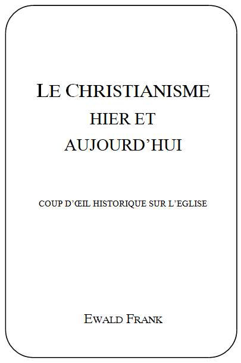

Titre original de louvrage:
Das Christentum gestern und heuteAuteur:
Missionnaire Ewald Frank, Krefeld (Allemagne)
Copyright © 1985 by
Freie Volksmission e.V., Krefeld (Allemagne)Traduit de lallemand. Tout droit de reproduction,même partiel, est réservé.
Editeur
Centre Missionnaire de la Parole Parlée,
Case Postale 5633,
1002 Lausanne
Suisse
TABLE DES MATIERES Pardon des péchés
LE CHRISTIANISME HIER ET AUJOURDHUI
Coup doeil historique sur lEglise
AVANT-PROPOS
Le propos de cette brochure est de donner une impulsion nouvelle à ceux qui la liront. Nous avons pour but de rendre chacun attentif, afin que tout devienne clair en lui sur ce sujet. En se taisant beaucoup se sont déjà chargés dune faute grave; mais dautre part celui qui par ses propos ou ses écrits sécarte de la tendance générale fait alors mauvaise impression. De toute façon, il nest pas possible de plaire à tout le monde.
La génération daujourdhui nest pas responsable des fautes daiguillage qui se sont constamment répétées dans le passé. Cest pourquoi nul ne devrait se sentir personnellement attaqué. Si le développement des erreurs dans lhistoire de léglise est démontré, ce nest pas pour le plaisir de critiquer mais bien par amour de la Vérité. En lisant cette brochure chacun devrait reconnaître les bonnes intentions qui lont inspirée et voir aussi la main qui lui est tendue.
Nous croyons que le monde ecclésiastique dans son ensemble est persuadé denseigner et dagir de façon correcte. Tous sefforcent de faire la volonté de Dieu. Cependant personne na mis devant leurs yeux le fait quune totale déviation de la prédication originelle et de sa pratique a eu lieu. Aujourdhui on ne trouve parmi eux que des coutumes et des traditions qui nont absolument aucun fondement biblique.
Leur orientation spirituelle sest perdue et les foules sont conduites faussement. Pour ce qui est du zèle et du dévouement, on les trouve dans toutes les religions, cependant quelque soit leffort fait par lhomme, cela ne suffit pas pour trouver grâce devant Dieu.
Dans cette courte introduction certains thèmes ne seront queffleurés ou traités en style télégraphique. Dans des publications ultérieures nous nous occuperons dentrer dune manière plus détaillée dans les doctrines et thèmes posés comme fondements. Le développement actuel aussi sera éclairé à la lumière des prophéties bibliques.
Krefeld, printemps 1985
QUELLE EST LA RELIGION JUSTE?
Nous voulons nous occuper ici du sujet le plus important qui existe. Au fond cela devrait intéresser tout homme. Lindifférence peut devenir du fatalisme. Chacun sait quil y a différentes religions. Mais la question qui devrait être posée est celle-ci: y a-t-il une religion véritable? Toutes prétendent être dans la vérité. Cependant il est compréhensible que le scepticisme se soit développé dune telle façon à légard des choses religieuses. Des gens se détournent des confessions religieuses et ils ne veulent plus rien avoir à faire avec Dieu. En général on considère même que Dieu et la religion vont ensemble. Cependant il y a des personnes qui réfléchissent sur ces choses dans le silence et se demandent sil ny aurait pas un Dieu vivant qui se soucie de lhomme. Mais comment trouver son chemin dans toutes les ramifications religieuses? Qui peut donner à la question posée une réponse positive? Ou bien tout cela nest-il que tromperie? Les Hindous ont-ils raison? Les Musulmans ont-ils raison? ou bien serait-ce les Bouddhistes? Lun des fondateurs de religions est-il ressuscité dentre les morts? Jusquà ce jour, lhumanité na entendu parler que de la résurrection dun Seul. Tous les autres ont été ensevelis avec leurs doctrines.
La Vérité ne peut venir que du Véritable. A-t-Il à un moment quelconque fondé une religion? Si oui, où et quand cela sest-il passé? quelle est-elle? Si non aucune religion na le droit de se référer à Lui. Tout homme ne peut que ségarer, et en fait il ségare. Cest pourquoi nous ne pouvons pas davantage nous reposer sur les fondateurs de religions, ou sur les princes ecclésiastiques que sur nous-mêmes. A part les religions connues dans le monde lon peut compter, uniquement dans le christianisme, bien quelques centaines de réunions déglises diverses. Chacune dentre elles a un enseignement particulier et fait le salut de ses membres par sa méthode. Naturellement quaucune de ces institutions religieuses ne peut être soupçonnée de conduire intentionnellement ces personnes dans lerreur. Cependant le fait quexistent tant de courants spirituels nous oblige à réfléchir.
Tout homme qui veut atteindre un but doit se mettre en route. Mais comment trouverons-nous le chemin qui nous conduira au but avec certitude? Comment trouverons-nous la Vérité sur laquelle nous pourrons absolument nous reposer? Au travers de toute cette confusion humaine il doit y avoir une possibilité de découvrir la trace divine. Qui dans ce siècle éclairé peut se confier aveuglément à nimporte quelle foi? Il ne suffit pas de déclarer quelque chose comme étant divin; cela doit être légitimé den-haut! Chacun devrait faire usage de son droit à être orienté spirituellement. Il sagit pourtant de quelque chose de plus que de cette courte vie terrestre.
Nous sommes destinés à avoir communion avec le Père céleste. Il ny a pas seulement une vie temporaire, mais aussi une vie éternelle. Aussi certainement quil y a un corps physique, ainsi y en a-t-il un spirituel. Si cela va de soi quil y a une vie sur la terre, de même cela va de soi quil y a également une vie dans le ciel. Cest le même Dieu qui a créé le ciel, la terre et tout ce qui sy trouve. La majesté de la création rend un puissant témoignage du Créateur.
Beaucoup croient que lappartenance à une église ou à une communauté religieuse les relie au salut. Ce point de vue est plus ou moins soutenu dans les religions. Font-elles toutes des promesses vides de sens?
Celui qui visite un cimetière peut lire des épitaphes bien sonnantes sur les pierres tombales telles que: «Ici repose en paix », «Entré bienheureux à la maison », «Caché en Dieu ». Les annonces mortuaires dans les journaux résonnent tout aussi bien: « bienheureusement endormi», « appelé par Dieu à la maison », « est décédé muni des saints sacrements de léglise catholique romaine ». Tout cela donne limpression que tous les morts se trouvent auprès du Seigneur. Mais quen est-il en réalité? Somme toute, ceux qui sont partis avaient-ils même une relation personnelle avec le Seigneur?
Au cimetière, ceux qui restent reçoivent ces paroles de consolation: Il a plu au Seigneur de prendre dans Son Royaume le frère, ou la soeur . Ensuite dans léglise on fait savoir solennellement aux personnes endeuillées que ceux qui sont partis ne se trouvent pas au Paradis mais au purgatoire. Mis à part le fait que cette notion est de pure imagination et ne se trouve pas une seule fois mentionnée dans les Ecritures Saintes, on doit se poser sérieusement la question de savoir ce qui est vrai. Où se trouve maintenant réellement celui qui est parti? Est-il possible que de leur naissance à leur mort les gens soient maintenus dans lerreur et quon ne les fasse quespérer? Leur vie durant on dit quils sont sauvés et après leur mort ils nont visiblement pas atteint le but. La religion nest-elle donc pas de lopium destiné à tranquilliser les gens jusquau moment terrible du réveil?
Dun bout à lautre de lannée ils reçoivent des sacrements qui devraient les sauver, sans quils aient effectivement reçu le salut. Depuis le baptême des bébés jusquà lextrême-onction, en passant par la confirmation, ils ont été préparés pour le salut. Et après tous ces nombreux efforts, en voici le triste résultat: la personne décédée na pas été prise en haut mais elle est allée en bas.
Sur ce terrain personne ne peut mieux en parler que les médecins et infirmières qui assistent sans cesse au décès des gens. Sans égard pour lappartenance de la personne à une communauté religieuse, une lutte sengage contre la mort. Généralement on ne connaît pas le désespoir qui vient sur le mourant. Il ny a pas la moindre trace de foi, de certitude et de joie. Les gens, supposant quils ont agi au mieux de leur connaissance et de leur conscience selon les exigences de Dieu, sont rendus à lévidence quil ne sagit pas du tout de ce que Dieu exige, mais bien de ce que les églises réclament et imposent à leurs membres.
Puisquil sagit ici de vie ou de mort, chacun devrait séprouver soi-même. Tout homme, quelle que soit sa race ou sa nationalité, a le droit dapprendre la vérité sur Dieu et sur lui-même. Quiconque nest pas indifférent à son avenir éternel a même le devoir de faire une comparaison entre ce qui est enseigné et pratiqué dans son église et ce quen disent les Saintes Ecritures. Seul ce qui vient de Dieu conduit au Seigneur et peut subsister devant Lui. Celui qui dit: «Je men fiche! Après moi le déluge!» ne sait pas du tout ce quil dit. La Bible est réellement le seul livre sur terre qui nous conduise dans lintimité de Dieu et la connaissance de Ses desseins. Du commencement à la fin on y trouve les réalités divines confirmées.
Nous devrions prendre au sérieux aussi bien notre vie que notre mort. Il ne sagit pas de donner aux vivants la peur devant la mort, mais au contraire, ici nous voulons montrer le chemin qui conduit au but. La foi et la confiance en Dieu ainsi quen Sa Parole doivent être restaurées à tout prix. Dieu est véridique, et Sa Parole est placée au-dessus de tout doute. Dans toutes les religions on suscite la peur à légard de Dieu, alors quen même temps on a gagné leur confiance dans les dispositions religieuses humaines. Notre tâche consiste à ébranler la confiance que les gens placent dans toutes les religions et de les amener à croire en la véracité de Dieu et de Sa Parole.
Le Tout-Puissant a formé des desseins, Il a un plan pour lhumanité. Malheureusement les hommes ont conçu leurs propres plans et ils ont élevé à lintérieur du Royaume de Dieu leurs propres royaumes religieux. Lhumain se trouve en opposition directe avec le Divin. Celui qui veut se laisser intégrer au conseil éternel de Dieu doit sortir de toutes les religions imaginées au cours des siècles.
Le Dieu Tout-Puissant est en même temps omniscient et Il a conçu avant la fondation du monde un plan pour lhumanité. Linterruption temporaire survenue à cause dune défaillance humaine par la désobéissance et la transgression nannule pas Ses desseins éternels. Comme le Seigneur connaissait toutes choses à lavance, Il avait pu en tenir compte dans Ses projets. La Parole de Dieu est tout autant véritable et infaillible que Dieu Lui-même.
Le chemin de Dieu avec lhumanité est clairement décrit dans Sa Parole. Malheureusement il a été enténébré et rendu impraticable par les traditions religieuses. Même si les dogmes sont vieux de centaines ou de milliers dannées, ils restent ce quils sont: cest-à-dire des thèses introduites par les hommes et rien dautre. Les dogmes ne peuvent pas devenir automatiquement justes simplement parce quils ont été promulgués par une institution religieuse. Ce qui est humain ne deviendra jamais Divin, et ce qui est Divin ne sera jamais humain. La Vérité et le mensonge sexcluent lun lautre. Ou bien on a à faire avec la Vérité, ou bien on a à faire avec lerreur. La Source de toute Vérité est Dieu; lauteur de tout mensonge est Satan. Un parfait mensonge est une fausse présentation de la Vérité, et le monde religieux est plein de cela. Toute théorie ou pratique qui ne saccorde pas avec les Saintes Ecritures ne peut jamais être dorigine divine. La Parole de Dieu contient le témoignage total que le Seigneur a remis à lhumanité.
Les prophètes de lAncien Testament ont fait connaître la venue du Messie, et avec Lui du salut de Dieu; les apôtres ont été des témoins oculaires de laccomplissement des prophéties dans la vie du Sauveur; au moyen de la prédication de lEvangile loffre de la grâce divine est transmise à tous les hommes. Une réalité confirmée par Dieu peut être crue de chacun. Il y a une grande différence entre léglise du début et le christianisme daujourdhui. Tout ce qui se trouvait dans la première Eglise manque à léglise daujourdhui, et tout ce qui existe dans le christianisme établi ne se trouvait pas dans lEglise primitive; une comparaison fait apparaître cela clairement.
Dans lEglise primitive la prédication était conforme aux Ecritures. Les apôtres avaient été enseignés par le Seigneur Lui-même et ils se trouvaient sous la direction du Saint-Esprit. Celui qui lit les premiers chapitres des Actes des apôtres peut avoir un aperçu de la vie de lEglise primitive. Une plénitude de lEsprit et des bénédictions de Dieu était manifestée en Elle. Les premiers chrétiens nétaient quun coeur et quune âme; ils partageaient tout entre eux et formaient une grande famille de Dieu. LEglise primitive nétait pas une organisation rigide mais bien un organisme vivant. Notre Seigneur dit: je bâtirai mon église, et les portes du séjour des morts ne prévaudront point contre elle.Aujourdhui encore Il sen occupe.
De même que Dieu sest révélé en Christ, ainsi Christ se révélait au moyen de Son Eglise. La même prédication, le même service se poursuivaient. De grands signes et miracles saccomplissaient. Des incrédules devenaient des croyants, des possédés étaient libérés et des malades guéris. Tout était à ce moment-là encore valable; la Parole de Dieu sappliquait encore comme une mesure toujours valable à ceux qui devenaient croyants. Ils plaçaient leur confiance dans le Seigneur quils avaient vu dans Son service, dans Ses souffrances, Sa mort et Sa résurrection. Une sainte crainte était en eux en Sa présence car ils avaient assisté à tous ces événements et ils se rassemblaient en Son Nom.
Dans le christianisme originel il y avait des apôtres, des prophètes, des évangélistes, des pasteurs et des docteurs (1 Cor. 12.28; Eph. 4.11). Ces différents services avaient été établis par Dieu dans Son Eglise. Ils étaient nécessaires à lédification spirituelle et se complétaient les uns les autres. En ce temps-là on ne savait rien dun Pape, de cardinaux, darchevêques, de moines ou de nonnes. Toutes ces choses qui dans le monde chrétien daujourdhui sont considérées comme allant de soi nexistaient pas en ce temps-là.
Selon la volonté de Dieu lEglise du Seigneur était à lorigine pensée comme une institution divine. Personne navait le droit de placer en Elle quelque chose de contraire à la Bible. Cest vrai quElle était composée de personnes ayant leurs infirmités et leurs défauts, de pécheurs ayant reçu la grâce et qui étaient devenus des enfants de Dieu, cependant leurs doctrines et leurs pratiques devaient du commencement à la fin être en accord avec la Parole de Dieu. Tout ce qui ne soutient pas lépreuve de la Parole ne pourra certainement pas davantage subsister au jour du Jugement devant le Tribunal de Dieu. Cest pourquoi pour un croyant biblique il ny a aucune possibilité daccepter lintroduction dune doctrine imaginée par lhomme. La confession de foi valable devant Dieu ne se trouve pas dans un catéchisme mais bien dans les Saintes Ecritures uniquement.
Les apôtres navaient rien à faire avec la réussite de la «Regula veritatis», laquelle avait été proposée comme dogme apostolique. Du reste, cest près de la fin seulement que se trouve: « et au Saint-Esprit, à la sainte Eglise, au pardon des péchés, à la résurrection de la chair. Amen!». Maintenant chaque dimanche des millions de personnes de toutes les dénominations récitent dans le monde entier ces paroles: «Je crois au Saint-Esprit, à la sainte Eglise catholique, à la communion des saints ». Cette adjonction ne date même pas du temps post-apostolique qui a suivi directement celui des apôtres, mais cela a été ébauché après le concile de Nicée et complété lors des synodes suivants. Pour lui donner du poids on sest référé dune manière injustifiée à lautorité des apôtres.
La même chose sest passée avec le livre «Didache» que lon a trouvé seulement en 1883 dans un couvent, et que lon a arbitrairement antidaté de la fin du premier siècle. Cela na rien de commun avec la doctrine des douze apôtres. Nous y trouvons par exemple à la page 29: «Si par le travail de tes mains tu gagnes quelque chose, tu dois aussi donner quelque chose pour labsolution de tes péchés». Est-ce cela lEvangile? Les apôtres connaissaient personnellement Celui qui a pardonné nos péchés. Aujourdhui ils parleraient sur tous les points de la même manière quils le firent en leur temps. Tout cela a été écrit afin que nous puissions éprouver toutes choses. Qui donc aujourdhui observe cette parole: Eprouvez toutes choses ? Dieu ne se contredit pas. Ses décisions sont parfaites. Tout ce qui semble se contredire se trouve dans la pensée des théologiens, mais pas dans la Parole de Dieu.
Un homme qui ne regarde pas les choses au travers de lunettes religieuses doit être épouvanté lorsquil voit quelles déviations ont eu lieu. Le patrimoine originel de la foi a été modifié au point dêtre méconnaissable. Cest un tout autre évangile qui est prêché.
A ce compte-là on pourrait penser: «Pourvu quon soit sincère, alors rien ne pourrait être imputé aux gens». Mais ce nest pas cela qui va rendre juste lerreur. Quand il sagit de foi, de question denseignement et de pratiques dans lEglise, ce nest pas dans les conciles que cela peut être trouvé; ce qui doit être valable, cest ce qui nous a été laissé par lEglise primitive. Les questions et problèmes déglise peuvent bien être discutés dans les commissions correspondantes, mais lenseignement et la pratique de Christ et des apôtres demeure depuis longtemps fixés: Luther disait à la diète de Worms, le 18 avril 1521: «La raison pour laquelle je ne crois pas davantage au Pape quaux Conciles vient du fait quils se sont souvent trompés et se sont enchevêtrés dans leurs propres contradictions. Si je ne suis pas convaincu par des témoignages des Ecritures et par des arguments bien clairs, je le suis alors par les témoignages des Ecritures cités par moi et qui sont renfermés dans la Parole de Dieu. Je ne peux pas me rétracter, et ne le veux pas non plus, car agir contre la conscience nest pas sûr et nest pas salutaire. Que Dieu me soit en aide. Amen!».
Nous nous occupons du conseil éternellement valable du Dieu Tout-puissant envers lhumanité et par comparaison nous voulons contribuer à son éclaircissement. Il sagit de deux choses fondamentalement différentes et séparées lune de lautre. Lune est du domaine Divin alors que lautre est du domaine humain. Celui qui reconnaît être de Dieu croira ce que la Parole de Dieu dit, et cela sans prêter garde à ce que les Conciles et Synodes peuvent bien décider. La Parole de Dieu nest pas soumise aux changements des temps car Elle est pour toujours définitive.
Il faut que toute personne sache clairement que les Saintes Ecritures contiennent le témoignage de Dieu dans son entier et quil est parfaitement achevé. Dieu na absolument rien oublié. Cest seulement à mesure que le Divin sest perdu que lhumain en prit la place. Toutes les décisions prises au cours de lhistoire de lEglise ne deviendront jamais partie intégrante du Testament de Dieu parce quelles nappartiennent pas à lenseignement primitif de Christ et des apôtres, lequel a été fondé sur la Parole prophétique.
On ne peut pas se permettre de ne pas entendre ou dignorer les sérieux avertissements de lAncien et du Nouveau Testament. Il est écrit: Vous najouterez rien à ce que je vous prescrits, et vous nen retrancherez rien (Deut. 4.2). Plus tard le Seigneur dit aux scribes qui navaient pas reconnu ce que Moïse et les autres prophètes avaient dit mais suivaient plutôt leurs interprétations et leurs traditions: Ce peuple mhonore des lèvres, mais son coeur est éloigné de moi. Cest en vain quils mhonorent, en donnant des préceptes qui sont des commandements dhomme (Marc 7.6,7).
Des communautés de croyants ne prennent absolument pas garde à la Parole de Dieu et sont enchevêtrés dans des doctrines humaines, et cependant il y a plus que jamais auparavant une exploitation religieuse maintenant. Au-dessus de toutes ces actions et ces publications antibibliques se retrouve toujours ce même mot: «Cest en vain!». Cest en vain que toutes les prières sont présentées, que tous les cultes sont organisés; en vain tous les cantiques et les cérémonies rituelles; en vain les grandes campagnes dévangélisation des églises et leurs préparatifs. Tout ce qui dans le Royaume de Dieu ne se fait pas conformément à la Parole de Dieu ne vaut absolument rien devant Dieu. Dans lequel de ces nombreux programmes doit-Il se reconnaître? Pour qui doit-Il prendre parti?
Le Seigneur ne permet aucun mélange. Il désire que la pure Semence de Sa Parole soit gardée sous sa forme originelle, et quElle soit semée telle quelle. Il réprimande les conducteurs religieux qui, hier comme aujourdhui jouissent dune grande considération parmi le peuple, en leur disant: Vous anéantissez fort bien le commandement de Dieu, pour garder votre tradition (Marc 7.9). On doit mettre lun de côté pour pouvoir mettre lautre à sa place.
Le Seigneur même nous adressera cette pressante mise en garde: Toute parole de Dieu est éprouvée Najoute rien à ses paroles, de peur quil ne te reprenne et que tu ne sois trouvé menteur (Prov. 30.5,6). Tous ceux qui ajouteront quelque chose au témoignage pleinement achevé des Saintes Ecritures, dans lAncien ou le Nouveau Testament, devront se tenir là devant Dieu comme menteurs pour Lui en rendre compte et ils seront damnés. Depuis le jardin dEden, Satan, le premier menteur, exerce son influence parmi les hommes afin dinterpréter différemment la Parole de Dieu. Jusquà la fin il faussera la Parole afin de tromper lhumanité. Seul celui qui peut pénétrer ses ruses et échapper à son influence peut se placer sous linfluence directe de Dieu, laquelle procède uniquement de la Parole par lEsprit
Le Saint-Esprit est lEsprit de Vérité et seule la Parole de Dieu est la Parole de Vérité. Dans le dernier chapitre de la Bible se trouve lavertissement définitif: Si quelquun y ajoute quelque chose, Dieu le frappera des fléaux décrits dans ce livre; et si quelquun retranche quelque chose des paroles du livre de cette prophétie, Dieu retranchera sa part de larbre de vie, et de la ville sainte, décrits dans ce livre (Apoc. 22.18,19).
Qui donc peut se dispenser de cette Parole à la légère? Exactement comme sest accompli ce que le Seigneur Dieu a dit au commencement: Le jour où tu en mangeras, tu mourras, ainsi se manifestera cette parole comme étant également vraie. Dieu pense ce quIl dit, et Il dit ce quIl pense. Les Ecritures ne peuvent pas être brisées. Toutes les décisions de Dieu sont irrévocables et parfaites.
DERNIERES VOLONTES
Lapôtre parle dun testament, dun legs, de dernières dispositions qui, sitôt quelles ont pris force de loi, ne peuvent plus être changées ou munies dadjonctions après coup (Gal. 3.15). Avec la mort de notre Seigneur, le Nouveau Testament est entré en vigueur. Comment des hommes ont-ils osé entreprendre toutes ces modifications? Dans Hébreux 9, il est encore une fois question de cet état de choses et il est dit aux versets 16 et 17: Car là où il y a un testament, il est nécessaire que la mort du testateur soit constatée. Un testament, en effet, nest valable quen cas de mort, puisquil na aucune force tant que le testateur vit.
Lors de la succession dun homme il y a souvent des querelles. Mais il est totalement exclu que les dernières volontés du défunt faites par écrit soient modifiées; cependant cest justement ce qui, dune manière incompréhensible avec le Testament Divin. Dun côté on se réclame de Christ, et de lautre on a fait de Lui et de Son Testament quelque chose dentièrement différent. Ce quIl a laissé derrière Lui a été rendu sans force parce quon a ajouté à la place de la Parole de Dieu des pensées tout à fait étrangères.
Chaque communauté déglise a le droit de croire et de faire ce quelle veut. Mais pour ceux qui ont la prétention dêtre lEglise du Dieu Vivant, cest-à-dire lEglise de Jésus-Christ, il faut alors que la Parole de Dieu et le Testament de Christ soient reçus dans toute leur étendue, tels quIl les a laissés après Lui. Où donc tous ces dogmes et traditions qui ont été ajoutés au cours de lhistoire de lEglise peuvent-ils trouver place? Ils nappartiennent absolument pas au Testament que le Seigneur a laissé après Lui.
Dans la conscience des hommes cette pensée sest fermement enracinée que les églises organisées étaient une institution de Dieu et quelles avaient à enseigner et à agir sur la terre à la place de Christ. Mais que sont-elles en réalité? Dans le petit catéchisme catholique nous lisons en conclusion du sujet «Les ordres de lEglise» ce qui suit: «Christ a accordé aux chefs de lEglise le droit de donner des commandements. Il veut que par amour pour Lui nous observions les commandements de lEglise». Où et quand Christ aurait-Il dit quelque chose de semblable? Les commandements de Dieu ont été donnés depuis longtemps, et ils devraient être connus de tous. Mais malheureusement lhumanité a considéré les commandements de lEglise comme des commandements de Dieu, et cest ainsi quelle sest égarée.
Du temps de Constantin léglise mondanisée a été reconnue comme Eglise. Constantin, par des artifices politiques, commença à gagner en 313 le christianisme comme le paganisme, tous deux pour ses desseins. Cest à son instigation que le concile de Nicée fut convoqué.
Après 325 il soutint la construction aussi bien déglises que de temples païens. Sous sa domination le christianisme mondain prit une forme stable et il devint ainsi à lintérieur de lempire romain une puissance spirituelle mondiale. Eusèbe vit en Constantin le sauveur qui les sortirait de leur profonde détresse. Après de cruelles persécutions de chrétiens, de Néron jusquà Dioclétien on commença alors à respirer.
En lan 380, sous le règne de Théodose 1er et de Gratien, on mit fin à la liberté religieuse en général. Jusque là avaient encore existé quelques communautés de croyants qui subsistaient à côté du christianisme reconnu par létat. Mais dorénavant on obligea les citoyens, par la force de létat, à devenir des chrétiens «romains». Cet événement arriva à son achèvement sous Justinien (527-565). LEglise fut dès lors et définitivement lEglise reconnue par létat et les prêtres devinrent alors des fonctionnaires détat. Avec la ruine de lempire romain païen sétablit la domination religieuse de Rome, Ce fut le commencement du cruel Moyen-Age; environ mille ans sécoulèrent jusquà lapparition de la Réformation. La monarchie à la fois de létat et de léglise, dans laquelle léglise triomphait presque toujours, eut pour conséquence que tous les autres croyants furent persécutés. Des peuples entiers furent christianisés par la violence. Des millions souffrirent la mort par le martyre, parmi lesquels cent mille Juifs qui étaient stigmatisés sous laccusation dêtre des «meurtriers de Christ» et des «ennemis de Dieu». LEglise devint un élément de puissance politique.
Déjà pendant les deux premiers siècles après Christ différentes doctrines inventées de toutes pièces furent introduites. Cependant au cours du troisième siècle, leur mise en pratique générale sous contrainte commença. Lobservation de toutes les nouvelles doctrines et pratiques fut exigée. Le crucifix et le signe de la croix, les cierges et lencens furent introduits. Toujours plus de choses nouvelles furent ajoutées: la vénération des saints, le sacrifice journalier de la messe et beaucoup dautres choses.
Lors du concile dEphèse en 431 la vénération de Marie en tant que mère de Dieu fut proclamée. En lan 500 le clergé commença à se vêtir uniformément. La fête en lhonneur de la vierge Marie, le baisement des pieds du pape, la vénération des images et des reliques, la vénération de Joseph, le jeûne du vendredi suivirent. Le célibat des prêtres fut introduit en 1079, puis vinrent le Rosaire, la vente des indulgences, la doctrine de la transsubstantiation, la Fête-Dieu et ainsi de suite, jusquà la proclamation du dogme de lascension corporelle de Marie. Du temps des apôtres non plus on ne connaissait encore rien dun confessionnal.
La liste pourrait être allongée à volonté. Nous devons dire ici clairement que tous ces dogmes nont rien de commun avec le christianisme primitif et avec lenseignement des apôtres. De quel droit ont-ils été introduits? En principe tout enseignement originel a été transformé et beaucoup de choses ont été ajoutées, si bien que plus rien nest juste.
Le Seigneur dit par exemple: Nappelez personne sur la terre votre père, car un seul est votre Père, celui qui est dans les cieux (Mat. 23.9). Qui donc peut comprendre que cette déclaration est complètement ignorée car le monde entier tombe aux pieds dun homme pour lui rendre hommage et lhonorer en lappelant «Saint-Père»? A cela le Seigneur répond: Je ne donnerai pas ma gloire à un autre! (Esa. 48.11). Jésus nous a enseigné à prier en disant: Notre Père qui es aux cieux, que ton nom soit sanctifié . Nest-ce pas blasphémer que dédaigner tout simplement la Parole de Dieu et employer ce titre pour un homme? Qui donc est le Saint Père dont le Nom doit être sanctifié? Est-il dans les Cieux ou sur la terre?
Où nous est-il rapporté dans le christianisme primitif dapparitions de Marie, de lieux de pèlerinages ou de vénération des saints? Au contraire, la Bible nous met en garde de manière pressante contre toute relation avec les morts. Ces pratiques sont du spiritisme et de loccultisme. La vénération de patrons protecteurs est absolument antibiblique. Bien davantage encore, cela ne peut avoir quune seule signification: le retour au culte des idoles du paganisme.
Nous ne trouvons pas davantage dans les Saintes Ecritures la moindre indication que Marie soit médiatrice entre Dieu et les hommes. Il est écrit: Car il y a un seul Dieu, et aussi un seul médiateur entre Dieu et les hommes, Jésus-Christ, homme (1 Tim. 2.5). La même chose est valable pour le rôle dintercesseur quon lui attribue à elle. Dans la Parole de Dieu il est écrit très clairement: Et si quelquun a péché, nous avons un avocat auprès du Père, Jésus-Christ, le juste. Il est lui-même une victime expiatoire pour nos péchés, non seulement pour les nôtres, mais aussi pour ceux du monde entier (1 Jean 2.1,2).
Pareillement les Saintes Ecritures ne nous parlent que de lAscension de Jésus-Christ. Pendant quil les bénissait il se sépara deux, et il fut enlevé au ciel (Luc 24.51). Pas un seul apôtre na jamais rien su dune soi-disant ascension de Marie. Ce nest quen 1951 que ce dogme a été établi daprès une légende qui disait que Marie dans son corps et son âme avait été prise dans le Ciel. Il ny a aucun fondement biblique à cela. Les préceptes des hommes nont encore jamais sauvé quelquun, mais bien au contraire ils ont retenu des millions de personnes loin du salut.
PRETENTIONS NON BIBLIQUES
Dans les Saintes Ecritures on ne trouve pas la moindre indication montrant une personne revêtue dautorité et désignée comme étant un successeur de Pierre. Il ny est nulle part question dun remplaçant de Christ. Les Ecritures parlent uniquement de successeurs de Jésus-Christ. Il nest pas davantage écrit que Pierre ait été institué comme la tête visible de lEglise. Comment pourrait-il y avoir un homme qui dût être la tête, alors que Christ Lui-même est la Tête?
Il est écrit de Lui: Il est avant toutes choses, et toutes choses subsistent en lui. Il est la tête du corps de lEglise (Col. 1.17,18). Celui qui prétend être le chef sélève de la sorte au-dessus de Christ et doit être soumis au jugement de cette parole de Il Thessaloniciens 2.3,4. Un croyant en Christ biblique ne peut reconnaître pour Chef de lEglise que le Seigneur et Sauveur Jésus-Christ. Christ na jamais établi de remplaçant, ou de «Vicarius Filii Dei»; Il a Lui-même sauvé Son Eglise et Il est en train de lachever.
Il est intéressant de lire dans lhistoire de lEglise son développement spirituel. La légende selon laquelle Pierre aurait oeuvré comme évêque à Rome et aurait été enseveli là-bas ne peut pas être historiquement prouvée. Il est uniquement question dun certain magicien appelé Simon Magus, lequel avait fait une telle impression sur le sénat et sur le peuple de Rome quon lavait proclamé dieu et lui avait élevé une statue avec linscription: «Simoni dea sancto».
Que peut donc bien avoir à faire un tel conte avec lhomme de Dieu Simon Pierre, lequel en plus na jamais mis les pieds à Rome? Pour cela aussi nous nous référons aux Saintes Ecritures uniquement. Selon Galates 2.9 Pierre, Jacques et Jean, dun côté, se rencontrèrent avec Paul et Barnabas, de lautre, et ils convinrent en se donnant la main dassociation que Paul et Barnabas iraient vers les nations alors que Pierre, Jacques et Jean oeuvreraient parmi les Juifs.
On parlait de Paul comme étant lapôtre des païens, car cétait à cela que Dieu lavait destiné. Cest à lui que le Seigneur avait dit: Va, je tenverrai au loin vers les nations (Actes 22.21). A léglise de Rome Paul écrit au chapitre 15, verset 28: Je partirai pour lEspagne et passerai chez vous. Les voyages missionnaires de Paul, y compris ceux quil fit à Rome, nous sont clairement décrits. Pourquoi donc nest-il pas fait mention dun seul voyage de Pierre dans cette ville? Paul a envoyé de Rome la plupart de ses épîtres aux églises ainsi quaux particuliers. Beaucoup de ceux qui se trouvaient avec lui dans cette ville furent mentionnés par leur nom sans toutefois que le nom de Pierre eût été évoqué une seule fois. Peut-on se représenter que cela eût été possible si Pierre avait réellement oeuvré avec lui à Rome?
Du reste, savoir où un homme de Dieu sest trouvé et a agi signifie peu de chose. Il sagit uniquement de couvrir une pieuse invention sur laquelle une grande institution est fondée et avec laquelle elle voudrait établir lautorité de son enseignement. A cela nous pouvons répondre avec les paroles de Pierre lui-même qui dit: Ce nest pas en effet en suivant des fables habilement conçues (2 Pier. 1.16).
Les Saintes Ecritures ne parlent pas davantage dune succession apostolique. Lorsque Léon le Grand fut élu évêque de Rome en 440, il éleva la prétention que lévêque romain avait la prééminence sur tous les autres. Cest lui qui se référa à cette occasion à Matthieu 16.16. Il proclama solennellement être tout personnellement le successeur de Pierre. Jusque là cette idée avait été avancée de temps en temps parmi les «Nicolaïtes», mais elle navait pas encore été reliée à un ministère spirituel. Ce fut une orientation de foi qui provoqua une différence entre les laïcs qui écoutaient et les frères qui exerçaient un service. Cela est entièrement contre la Parole. LEglise rachetée représente une sacrificature royale (1 Pier. 2.9).
Il est connu de tous les historiens que Polycarpe (155), cet homme de Dieu béni, avait été avec Jean, le disciple préféré de Jésus qui fut exilé sur lîle de Patmos. Il avait reçu le pur témoignage de la bouche de lapôtre. Pas une seule fois dans ses plaidoyers on ne peut trouver même la plus petite indication à légard des idées inventées plus tard. Irénée, un messager de Christ revêtu dautorité (202), avait vécu un temps assez long avec Polycarpe. Lui non plus na jamais tait mention dun successeur de Pierre. Jusque là on cherchait autant que possible à se tenir à la Parole de Dieu. Tertullien (220) dit: «Cest le Seigneur, pas le serviteur, qui a la juridiction et le jugement».
Même lors du concile de Nicée les deux porte-parole Athanase et Arius ne mentionnèrent pas une telle pensée. Cest seulement en 445 que lempereur Valentinien confirma la suprématie religieuse de lévêque de Rome sur lEglise de tout lOccident. Désormais la toute-puissance provenait de Rome. Le docteur de lEglise bien connu Augustin dHippone (354-430) favorisa cette pensée; il écrivit sur le sujet: LEtat de Dieu. Pour lui lEglise représentait le Royaume millénaire. Il enseigna que «lEglise cest lautorité». Où donc demeure lautorité de Celui qui a dit: Tout pouvoir ma été donné dans le ciel et sur la terre!? (Mat. 28.18).
Ce développement non biblique ne peut pas être attribué aux apôtres du christianisme primitif. Comme nous lavons déjà exposé, il y avait en ce temps-là les ministères que le Seigneur avait institués pour lensemble de lEglise. Cependant chaque communauté locale avait des frères responsables. Ils étaient désignés par le nom «dancien», de «président», ou «dévêque». Par exemple dans lépître aux Philippiens, Paul salue lEglise du Seigneur, les saints et les bien-aimés en même temps que leurs évêques et diacres. Ces deux ministères faisaient partie de la communauté locale. Une condition biblique pour exercer cette tâche était quun tel homme soit marié (1 Tim. 3.2). Daucun apôtre ou prophète il nétait exigé quil soit mari dune seule femme, mais bien des diacres et des évêques. Seule une personne mariée elle-même et qui doit pouvoir venir à bout des différents problèmes familiaux peut donner à dautres des conseils et de laide pratiques.
Cependant lEsprit de Dieu révélait déjà en ce temps-là, comme Paul le dit, que cela nallait pas demeurer ainsi. Nous lisons dans 1 Timothée 4: Mais lEsprit dit expressément que dans les derniers temps, quelques-uns abandonneront la foi, pour sattacher à des esprits séducteurs et à des doctrines de démons, par lhypocrisie de faux docteurs portant la marque de la flétrissure dans leur propre conscience, prescrivant de ne pas se marier et de sabstenir daliments . A quoi ces paroles nous font-elles penser? Elles se sont accomplies à la lettre.
UN MALENTENDU
Celui qui lit avec attention Matthieu 16.18 constatera que le Seigneur na pas dit là: Tu es Pierre et sur toi je bâtirai mon Eglise, mais bien Et moi, je te dis que tu es Pierre, et que sur cette pierre (ce roc) je bâtirai mon Eglise. Il nest pas permis de prendre un seul verset et de linterpréter arbitrairement. Pour recevoir une réponse claire il est indispensable de lire tout le contexte.
Aussi bien dans lAncien que dans le Nouveau Testament le Seigneur est souvent désigné comme étant le Rocher. Mais pas une seule fois ce mot nest employé pour un homme. Pierre venait juste de recevoir la révélation divine sur Christ et quelques minutes plus tard il devait reconnaître son manquement, sa faillibilité. Juste quelques versets après, le Seigneur devait dire au même Pierre: Arrière de moi, Satan! tu mes en scandale; car tes pensées ne sont pas celles de Dieu, mais celles des hommes (Mat. 16.23).
Cela devrait donner à réfléchir à tous ceux qui sarrogent le droit dapporter leur propre interprétation à la Parole de Dieu. Tout ce qui nest pas en accord avec la Parole écrite vient dune fausse inspiration. Les mêmes paroles que le Seigneur a dites en ce temps-là à Pierre, lequel à cet instant-là nétait manifestement plus sous linspiration divine mais émettait des pensées humaines, Il les dit aujourdhui à chacun de ceux qui se trouvent sous une fausse inspiration.
Sur le terrain spirituel il ne sagit pas dexposer de bonnes pensées qui apportent de la clarté, mais il sagit plutôt dexposer la pensée éternelle de Dieu quIl a clairement exprimée dans Sa Parole. Il ny a que deux sources dinspiration. Ou bien lhomme puise à lune, ou bien il puise à lautre. Dans le jardin dEden Satan commença à donner au premier homme sa propre interprétation de la Parole. Tout dabord Eve écouta cela, et Adam à son tour lécouta. Cest comme cela quont commencé toutes les détresses de cette terre. Ce doit devenir bien clair pour chacun que Satan ne se présentera jamais avec une déclaration différente de Dieu et de Sa Parole. Cela serait trop frappant. Il se sert toujours de la Parole de Dieu, seulement il la redonne dune manière faussée. Ce nest que dans la mesure où il peut faire croire aux gens quil sagit là de laffaire de Dieu quil peut les tromper. Cest pourquoi de tout temps ce quil dit a laccent de la piété.
Il ressort de lhistoire de la tentation de notre Seigneur que lennemi est aussi venu à Lui avec des passages bibliques quil avait toutefois détachés de leur contexte et quil employait faussement. Le Seigneur lui répliqua chaque fois par: Il est aussi écrit . Ainsi se référer aux passages bibliques ne signifie encore rien du tout si ceux-ci ne se trouvent pas en accord avec le témoignage tout entier des Saintes Ecritures. Bien que lennemi se présente avec des citations bibliques, il nen laisse aucune dans son contexte originel.
LES CLEFS
Cette parole de Matthieu 16.19: Je te donnerai les clefs du Royaume des cieux que le Seigneur adressa à Pierre se trouvait en relation directe avec son appel et sa mission. Lorsque lEglise du début se trouvait rassemblée le jour de Pentecôte, Pierre savança comme porte-Parole de Dieu. Rempli du Saint-Esprit il expliqua en quelques paroles les Vérités qui servent de fondement au salut. Celles-ci sont pour toujours obligatoires pour les croyants du Nouveau Testament.
Une clef symbolise laccès à une chose. Si quelquun a la clef dun palais, dune maison ou dune voiture il a accès à ces choses; devant lui souvrent les portes qui sont fermées, il peut entrer. Si quelquun a les clefs du Royaume des cieux, alors le Royaume des cieux souvre à lui avec tous ses trésors, toutes ses promesses, tous ses dons. Il a tout simplement le libre accès à tout ce que Dieu a préparé. Au travers de ce que le Seigneur a dit à Pierre, Il voulait faire ressortir tout particulièrement cette réalité. Tout dabord ce plein pouvoir Divin se rapportait prophétiquement à notre Seigneur (Es. 22.22). Plus tard Il en fit don à Ses serviteurs quIl avait appelés personnellement à Son service.
Le passage de Matthieu 18.18 a aussi été enlevé à tort de son contexte. Là, le Seigneur ne parle pas à Pierre mais bien à toute lEglise. Cest la raison pour laquelle il est écrit au pluriel: Je vous le dis en vérité, tout ce que vous lierez sur la terre sera lié dans le ciel, et tout ce que vous délierez sur la terre sera délié dans le ciel. Où donc entendons-nous parler decclésiastiques qui sont en état de lier les puissances de Satan, de chasser les démons ou de libérer ceux qui sont liés? Chacun peut porter une clef suspendue à son vêtement. Mais qui a reçu les pleins pouvoirs de Dieu?
Le verset suivant rend également témoignage du fait que le Seigneur sadresse à toute lassemblée. Il est dit: Je vous dis encore que, si deux dentre vous saccordent sur la terre pour demander une chose quelconque, elle leur sera accordée par mon Père qui est dans les cieux. Car là où deux ou trois sont assemblés en mon nom, je suis au milieu deux. Il est incompréhensible quon en soit arrivé à ce que le verset 18 ait été employé seulement en rapport avec les porteurs dune charge dans lEglise.
Les croyants forment véritablement le Corps du Seigneur et tous sont égaux devant Dieu. Paul écrit à lEglise de Rome: Car, comme nous avons plusieurs membres dans un seul corps, et que tous les membres nont pas la même fonction, ainsi, nous qui sommes plusieurs nous formons un seul corps en Christ, et nous sommes tous membres les uns des autres. Puisque nous avons des dons différents, selon la grâce qui nous a été accordée (Rom. 12.4-6). Dans son épître aux Corinthiens, chapitre 12, verset 4 Paul entre encore plus profondément dans cette pensée: Il y a diversité de dons, mais le même Esprit. Il fait ressortir que par le moyen du Saint-Esprit nous avons été joints ensemble comme membres de ce Corps du Seigneur. Dès le verset 7 il expose ceci: Or, à chacun la manifestation de lEsprit est donnée pour lutilité commune. Cest un événement. Puis il continue en énumérant les neufs dons de lEsprit parmi les membres du Corps de Jésus-Christ. Au verset 18: Maintenant Dieu a placé chacun des membres dans le corps comme il la voulu.
PLEINS POUVOIRS APOSTOLIQUES
Les apôtres, ainsi que tous les véritables envoyés de Dieu, nont pas régné avec la force de ce monde, mais plutôt avec les pleins pouvoirs Divins, dans la puissance du Saint-Esprit. Cest seulement en rapport avec la prédication de la Parole dont ils avaient reçu la charge de Dieu quils ont exercé lautorité divine que Dieu dans Sa souveraineté leur avait confiée. Cette autorité ne consiste pas à dominer lun sur lautre, mais bien en ce que tous shumilient sous la puissante main de Dieu. Cette pleine puissance ne dépend pas dune fonction, mais elle est reliée à la puissance du Ressuscité qui englobe tout.
Après Sa résurrection le Seigneur dit à Ses disciples présents dans la chambre haute: La paix soit avec vous! Comme le Père ma envoyé, moi aussi je vous envoie. De plus il est encore dit: Après ces paroles, il souffla sur eux, et leur dit: Recevez le Saint-Esprit. Ceux à qui vous (non pas tu) pardonnerez les péchés, ils leur seront pardonnés; et ceux à qui vous les retiendrez, ils leur seront retenus (Jean 20.21-23). Les relations entre ces différentes paroles sont très claires. Le Seigneur adresse cette commission universelle seulement aux hommes quIl a pris à Son service pour la prédication. Qui donc aujourdhui peut témoigner avoir été appelé par la Voix du Seigneur et avoir reçu de Lui sa charge? Qui a été véritablement inspiré par lEsprit du Seigneur au commencement? Qui est autorisé à agir en Son Nom?
Pierre ou Paul ont-ils été élus par une commission? Ou bien ont-ils été établis par Dieu? Il ny avait là aucun cardinal pour élire un Pape. Il ny avait ni panache de fumée ni acclamation du monde. Dans le christianisme primitif les hommes de Dieu avaient pleinement compris ce que le Seigneur leur avait commandé. Ils se tenaient sous la direction du Saint-Esprit. Ils apportaient dune manière correcte les passages bibliques se rapportant à un thème déterminé, et cela selon un dénominateur commun.
Le jour de Pentecôte le Saint-Esprit descendit avec un bruit puissant accompagné de feu divin qui enflamma la langue de tous ceux qui étaient présents. Ainsi purifiés par le feu Divin ils purent comme les prophètes de lAncien Testament exprimer la Parole dans la pleine puissance du Saint-Esprit. Ce que Pierre a annoncé lors de sa première prédication sera répété par chacun de ceux que le Seigneur a appelés et remplis du Saint-Esprit jusquà la dernière prédication: Repentez-vous, et que chacun de vous soit baptisé au nom de Jésus-Christ, pour le pardon de vos péchés (Actes 2.38). Au sujet de ceux que le Seigneur a Lui-même envoyés, Il dit: Celui qui vous écoute mécoute, et celui qui vous rejette me rejette (Luc 10.16).
PARDON DES PECHES
Lorsque le Seigneur parle aujourdhui par quelquun Il dit alors les mêmes choses quIl a dites il y a deux mille ans. Dans Luc 24.47 il est écrit, en se rapportant à Christ: Et que la repentance et le pardon des péchés seraient prêchés en son nom à toutes les nations, à commencer par Jérusalem. Le pardon des péchés nétait pas lié à une fonction, mais bien à Jésus-Christ le Crucifié. Ce nest que pendant la prédication que lEsprit de Dieu peut opérer dans les auditeurs le repentir nécessaire, leur donner la clarté pour la conversion, et de cette manière seulement le pardon leur sera accordé. Cest un événement personnel, et non pas laction dun homme qui exerce une fonction.
Dans Romains 10 Paul explique que la foi biblique vient de la prédication et que la prédication vient de la Parole de Dieu. Cest pourquoi il est important que ne soit pas prêché nimporte quoi, mais que Christ et Son Evangile, unis à la rédemption parfaitement achevée, forment le coeur de la prédication.
Cela devrait à proprement parler nous donner à réfléchir lorsque nous voyons que, dune part, lon remet les péchés des hommes toute leur vie et quils sont pardonnés, et que dautre part cependant on enseigne quil y a une punition à porter pour expier ses péchés. La Parole de Dieu affirme le contraire. Car, par une seule offrande il a amené à la perfection pour toujours ceux qui sont sanctifiés (Héb. 10.14). LEvangile de Jésus-Christ est une bonne nouvelle, un message de salut. Le prophète Esaïe a prophétisé, disant: Dites à ceux qui ont le coeur troublé: Prenez courage, ne craignez point; voici votre Dieu Il viendra lui-même et vous sauvera (Es. 35.4). Lapôtre Paul confirme ceci par ces paroles: Car la grâce de Dieu, source de salut pour tous les hommes, a été manifestée (Tite 2.11). Esaïe sécrie: Mais il était blessé pour nos péchés, brisé pour nos iniquités; le châtiment qui nous donne la paix est tombé sur lui, et cest par ses meurtrissures que nous sommes guéris (Es. 53.5).
Celui qui reçoit le Seigneur comme Sauveur ne peut plus être puni car cest Lui-même qui a pris sur Lui notre châtiment. Celui qui croit cela reçoit le pardon des péchés et la paix avec Dieu. Paul écrit: Etant donc justifiés par la foi, nous avons la paix avec Dieu par notre Seigneur Jésus-Christ, à qui nous devons davoir eu par la foi accès à cette grâce, dans laquelle nous demeurons fermes (Rom. 5.1,2).
Lapôtre écrit plus loin au sujet de Christ: En lui nous avons la rédemption par son sang, la rémission des péchés, selon la richesse de sa grâce (Eph. 1.5). Chacun peut lire avec nous Colossiens 1.14 où nous voyons que lensemble de loeuvre du salut est reliée au Sauveur Lui-même. Dans Romains 1.16 Paul dit: Car je nai point honte de lEvangile: cest une puissance de Dieu pour le salut de quiconque croit. On ne peut jamais assez mettre laccent sur le fait que cette foi est reliée uniquement à la Parole de Dieu. Chacun ne peut pas enseigner ce qui lui plaît et se référer encore à Christ. La foi doit être conforme à lEcriture.
Il ny a pas là de vaines promesses pour un temps indéterminé, mais ce que le Seigneur dit Lui-même saccomplit: En vérité, en vérité, je vous le dis, celui qui écoute ma parole, et qui croit à celui qui ma envoyé, a la vie éternelle et ne vient point en jugement, mais il est passé de la mort à la vie (Jean 5.24).
Comment se pourrait-il que le pardon, qui est un don de grâce de Dieu, puisse dépendre de laction dune Eglise? Cela dépend uniquement de la foi de lindividu, qui entend lEvangile et le reçoit. Il est écrit: Ainsi donc, comme par une seule offense la condamnation a atteint tous les hommes, de même par un seul acte de justice la justification qui donne la vie sétend à tous les hommes (Rom. 5.18).
Où donc les bonnes oeuvres qui poussent un homme à travailler à son salut pourraient-elles encore trouver place ici? Quiconque a du coeur et peut faire le bien le fera. Cependant personne ne peut gagner son salut par cela. Lorsque notre Seigneur sest écrié à la croix: Tout est accompli! et quIl mourut, notre salut était accompli une fois pour toutes. Paul continue un peu plus loin dans Romains 5: Car comme par la désobéissance dun seul homme beaucoup ont été rendus pécheurs, de même par lobéissance dun seul beaucoup seront rendus justes (v. 19).
Aussi certainement que par Adam nous avons été précipités dans la perdition, dans la mort, et que nous avons été séparés de Dieu, tout aussi certainement avons-nous été sauvés par Christ de la perdition, sortis de la mort et pris de lautre côté dans la Vie éternelle, ayant été réconciliés avec Dieu. Dieu Lui-même a réparé les dommages. Celui qui croit cela sera sauvé. Pierre en rend laconiquement témoignage: Il ny a de salut en aucun autre; car il ny a sous le ciel aucun autre nom qui ait été donné parmi les hommes, par lequel nous devions être sauvés (Act. 4.12). Il nest pas nécessaire de rien ajouter de plus à ces faits simples et clairs.
Il serait indigne de Dieu davoir voulu faire dépendre notre salut éternel du bon vouloir dautres hommes. La tâche bien définie dun messager de Dieu autorisé consiste en ceci: quil montre aux auditeurs dans la prédication que selon les Ecritures, une grande réconciliation a été accomplie entre Dieu et les hommes à Golgotha.
En rapport avec cela et pendant la prédication, lauditoire peut être apostrophé avec lautorité divine par ces paroles: «Croyez que vos péchés ont été pardonnés! Croyez que vos dettes ont été remises! Croyez que votre châtiment a déjà été porté!». Celui à qui cette divine réalité est illuminée par lEsprit de Dieu, en vertu de la Parole de Dieu, est gracié pour toujours et peut sen aller libre. Bien entendu chacun doit laccepter pour soi-même et ainsi il reçoit personnellement lassurance de son salut.
NOUVEAU COMMENCEMENT
Peu avant le commencement de la Réformation, le développement historique atteignit son point culminant. On peut se représenter comment sexerça simultanément la puissance de létat et de léglise durant cette période. Ceux qui pensaient et croyaient différemment étaient condamnés comme hérétiques et accusés dhérésie, étaient mis à mort par toutes sortes de procédés. Nous ne nommerons ici que lInquisition espagnole au XVème siècle ainsi que les procès faits aux sorcières, suivis de leur condamnation à être brûlées sur un bûcher. Nous ne voulons pas nous pencher davantage sur les nombreux manquements humains. La seule chose à laquelle nous visons est de montrer ici comment dans le christianisme le développement spirituel a de plus en plus dégénéré au cours des temps.
Cette terre a été abreuvée de beaucoup de sang. Un des martyrs les plus connus avant le commencement de la Réformation est Jean Hus (1415). Il éleva sa voix pour la dernière fois au concile de Constance; mais il fut conspué et cela navança à rien; il échoua. Il sagenouilla, et cest les yeux levés vers le ciel quil écouta calmement la proclamation du jugement contre lui. Puis il sécria: «Seigneur Jésus, à cause de ta miséricorde je Te demande de pardonner à tous mes ennemis!». Les pères du concile en rirent, et il fut conduit au bûcher.
Cependant la Réformation, qui avait entamé un tournant dans lhistoire de léglise, ne pouvait plus être arrêtée. La Vérité de lEvangile se fraya un chemin avec puissance. Martin Luther et dautres encore sélevèrent contre les fautes que léglise approuvait, et quelle soutenait même. Tetzel, le marchand dindulgences bien connu, faisait partie de ceux qui blasphémaient contre Dieu en paroles et en actes. Il prêchait que le Pape avait le droit absolu de remettre les péchés aux vivants et aux morts, et que labsolution du Pape était aussi efficace que la croix de Christ. Il prétendait aussi entre autres que le Pape pouvait pour le prix dune indulgence pardonner même à celui qui aurait péché charnellement contre la mère de Dieu. En clair cela voulait dire que chacun pouvait commettre les crimes les plus horribles et que le Pape les pardonnerait tous en donnant valeur à lindulgence au moment où largent tomberait dans la caisse.
Dans lhistoire de lEglise nous pouvons lire ce qui suit: «Luther entendit parler de lhorrible article dans lequel ce moine impudent prêchait en disant que la puissance de la vente des indulgences agissait de la même manière et tout autant que la croix de Christ, quil avait fait un contrat avec lapôtre Pierre, et quavec ses indulgences il avait sauvé plus dâmes que Pierre avec ses prédications La suite pratique de la prédication sur les indulgences profita à Luther en ce que cela donna limpulsion pour la première action de la Réformation». Comme toujours Dieu se servit aussi cette fois dhommes vivant sur la terre pour lhonneur et la glorification de Son Nom. Il y a des messagers de Dieu qui ne sont pas seulement connus à cause de limportance quils ont pour lhistoire de lEglise mais qui étaient aussi des serviteurs de Dieu par lesquels lhistoire du salut dans le Royaume de Dieu sur la terre a été faite.
Parmi de tels hommes il yeut Martin Luther, Ulrich Zwingli, Philippe Mélanchthon, Jean Calvin, Jean Knox, et un grand nombre encore qui vécurent en ce temps-là. Après des siècles où lon avait empêché les hommes de lire les Saintes Ecritures, des hommes de Dieu commencèrent à lire la Bible et à la traduire. Tout dabord la Bible fut traduite en quatorze langues; en 1600 il y en avait presque quarante, en 1800, septante-deux, en 1900, cinq cent soixante-sept langues. En 1950 la limite des mille cent langues et dialectes fut dépassée. Malgré toutes les tentatives de destruction le Livre de Dieu eut les plus fortes éditions et la plus large diffusion.
Dieu parlait de nouveau par le moyen de Sa Parole et laissait à nouveau les vérités bibliques devenir une réalité vivante dans la vie personnelle du croyant. Cependant on ne sarrêta pas là mais on chercha à rendre plus accessible à dautres personnes ce qui était devenu si grand et si précieux. Le succès queurent les réformateurs enflamma la résistance opposée au clergé établi, lequel voulait à tout prix retarder lextension de la diffusion de la Parole. La conséquence en fut que ce Message joyeux et libérateur se propagea dans des cercles toujours plus vastes et éloignés.
Vu au travers de lhistoire de lEglise, chacun de ceux qui ont pris part à ces événements avait une tâche bien précise à accomplir. Tout bien considéré, ils se complétaient les uns les autres par les doctrines que lon mettait particulièrement en évidence. On faisait ressortir que la Bible était de nouveau la seule mesure pour la prédication. Personne noserait aujourdhui appeler les choses plus clairement par leur nom que le fit Luther. Il est remarquable de voir comment il a mis à nu lantichristianisme. Il ne soccupait pas darguments fallacieux mais se référait toujours à nouveau aux Saintes Ecritures, dans la mesure où elles étaient révélées. Cest ainsi par exemple quil écrivit sur la fin de la captivité de lEglise à Babylone et fit ressortir la justification par la foi quun homme reçoit par grâce, en opposition avec la justification par les oeuvres qui ne peut sauver personne.
Aujourdhui beaucoup sont davis que la Réformation nétait nécessaire quen raison de la décadence de la morale et que cétaient les circonstances extérieures qui avaient donné lieu à cela. Bien que lon ait tiré argument de cela, cette manière de voir doit être démentie. Lors de la Réformation il ne sagissait pas dun réarmement moral, mais il sagissait bien plus dune ouverture à un renouvellement spirituel. Un nouveau commencement était nécessaire. La tutelle spirituelle devait une fois pour toutes arriver à sa fin et le jour de grâce, le jour du salut, devait être de nouveau proclamé. Cependant tous nétaient pas prêts à croire et ainsi à se mettre aux côtés de Dieu. Malgré cela une ouverture fut faite et la puissance illimitée et universelle de léglise fut brisée.
Peu de gens semblent se souvenir encore aujourdhui et peu dentre eux sont conscients du prix qui a été payé pour obtenir la libre prédication de la Parole de Dieu. La sanglante contre-réforme chercha dans presque tous les pays dEurope à abattre le mouvement de réformation et il y réussit en partie. Ce qui est particulièrement connu est la persécution des protestants en Hollande, et des Huguenots en France. Dans la nuit de la Saint-Barthélemy le sang de milliers de protestants coula dans les rues de Paris.
En ce temps-là léglise romaine exerçait simultanément lautorité spirituelle et mondaine. Dans sa sphère de domination toutes les armées étaient à sa disposition. Ces armées intervenaient toujours à nouveau dans les démêlés spirituels. Partout où la Réformation surgissait avec une force particulière et menaçait sérieusement davancer, la puissante armée apparaissait. Alors que la lutte spirituelle était en plein cours en Suisse, là aussi les armées furent levées. La Réformation devait être arrêtée et repoussée. Aux côtés des Zurichois des hommes se rassemblèrent autour de Zwingli pour se défendre contre ces attaques. Lui-même marcha en première ligne et leur dit: «Recommandez-vous à Dieu qui peut prendre soin de nous et des nôtres. Que Dieu nous soit en aide!». Pendant cette lutte exaspérante il fut atteint par une pierre et blessé par une lance. Il gisait parmi les morts et joignant les mains, il éleva ses yeux vers le ciel et pria. Le capitaine des armées catholiques vit cela, vint à lui et lui ordonna de se confesser. Zwingli refusa. Il arriva juste encore à dire ces paroles: «Vous pouvez bien tuer le corps, mais cependant pas lâme» avant de recevoir le coup qui le tua.
En Allemagne la Réformation semblait devoir être complètement arrêtée par la contre-réforme. Avec ses armées le roi Gustave-Adolphe de Suède vint en aide au Prince électeur de Saxe qui se tenait du côté protestant. Le 17 septembre 1632 il remporta une bataille importante. Avant cela le roi pria en ces termes: «Dieu Tout-Puissant, duquel vient la victoire ou la défaite, jette un regard favorable sur nous, tes serviteurs, qui sommes venus dun pays lointain pour combattre en faveur de la liberté et de la Vérité, pour Ton saint Evangile. Accorde-nous la victoire à cause de Ton saint Nom. Amen!». Deux mois plus tard, le 16 novembre 1632, il tomba dans le combat sur sol allemand.
En aucune circonstance on ne peut approuver que des puissances temporelles et militaires soient engagées pour la défense et la diffusion de lEvangile. La vérité nous oblige à dire que les protestants ont été acculés dans cette situation. Mais entrer dans les détails des nombreuses discussions qui eurent lieu pendant la contre-réforme et au cours de laquelle des milliers de personnes laissèrent leur vie nous conduirait trop loin.
Le fondateur de lordre des Jésuites, Ignace de Loyola, qui était le principal responsable de la contre-réforme, entra comme héros dans lhistoire de léglise catholique romaine. On lui a édifié dans le dôme de Saint-Pierre à Rome un monument plus grand que nature pour limmortaliser. A ses pieds gît un monstre sur lequel sont écrits les noms de Luther et de Calvin. Par cela on voulait représenter le symbole de sa victoire sur le monstre protestant.
Il est enseveli dans léglise del Gesù à Rome, sous un autel magnifiquement et richement décoré qui lui est dédié. Là aussi se trouve quelque chose ressemblant à ce symbole: de chaque côté de son cercueil se trouvent des groupes de marbre représentant la foi triomphante et la religion triomphante, et aux pieds desquels gisent des livres et des hérétiques sur lesquels sont également écrits les deux noms de Luther et de Calvin. Ces deux monuments parlent un langage clair.
Aujourdhui dans les milieux protestants il semble que plus personne ne se soucie de cela; animé par lesprit du siècle on passe par-dessus ces choses pour suivre son ordre du jour. En tout lieu on parle de dialogue et on désire lunion. Mais que diraient tous ces martyrs et ces champions de la Réformation, de labandon que lon fait aujourdhui du très saint prix de la foi et de lEvangile? Par ailleurs, cette évolution fait partie de la dernière échéance des temps de la fin.
La Réformation a été chèrement payée. Cest pourquoi son sens et son but ne peuvent donc pas avoir été de ne laisser derrière elle que les églises nationales populaires ou églises détat que nous connaissons, et qui dailleurs sont différentes dun pays à lautre. Bien plus que cela, la Réformation a constitué le fondement et le point de départ de tous les réveils ultérieurs, et cela jusque dans ce temps. Si autrefois ce puissant commencement navait pas été réalisé, les nombreuses églises libres et communautés chrétiennes nexisteraient même pas du tout aujourdhui. Il sagit dune réformation qui va de progrès en progrès et dont le but final est le rétablissement de lEglise de Jésus-Christ.
Le déclenchement de la Réformation a été un événement significatif dans lhistoire du salut. LEsprit de Dieu amena la lumière et la Vie dans le monde mort de la religion. La Parole fut placée au centre de la prédication. Les personnalités internationales connues ont depuis ce temps-là insisté sur une partie des différentes doctrines. Si on les mettait ensemble on obtiendrait alors un tout harmonieux.
Sans aucun doute toutes les vérités nont pas été publiées en une fois. Il y eut aussi des points denseignement comme la trinité et la formule du baptême trinitaire lesquels ne sont ancrés ni lun ni lautre dans le témoignage prophétique-apostolique et nont pas du tout été traités dans le mouvement officiel de la Réformation. La Réformation a emporté avec elle une partie du lourd héritage romain qui surcharge jusquaujourdhui toutes les Eglises protestantes et indépendantes.
Lors de la deuxième étape John Wesley entra en scène, et avec lui un grand nombre dardents prédicateurs de réveil. Ils mirent laccent sur la deuxième expérience dun homme devenu croyant. Comme dabord dans la Réformation laccent avait été mis sur la justification reçue par seule grâce, par le moyen de la foi dans loeuvre de salut parfaitement achevée par Christ, ainsi ces hommes firent ressortir le fait que ceux qui étaient devenus croyants et avaient été justifiés par la foi devaient faire lexpérience dune consécration intérieure et dun plein abandon. La Bible appelle cette expérience la sanctification. La véritable crainte de Dieu produisit la foi obéissante. Toujours plus profondément lEsprit de Dieu se fraya un passage dans les croyants. Cest de ce temps-là que proviennent les communautés méthodistes et dautres tendances de foi qui étaient dune certaine manière fondées sur le témoignage de ces vérités bibliques; mais sur dautres points de doctrine elles avaient cependant des conceptions différentes.
Puis suivit John Smith qui savança avec ses évangélistes bénis de Dieu. Le baptême de la foi fut proclamé sans compromis. Seul celui qui avait pris une décision personnelle pour Christ, et qui était prêt à Le suivre, était baptisé par immersion. Cest de là quest sortie léglise baptiste et également dautres petits groupes qui insistaient avec eux sur le baptême de ceux qui étaient devenus croyants, mais qui de nouveau dans dautres doctrines se différenciaient selon leur connaissance.
Dans les pays isolés le développement spirituel prit diverses formes. Dans les sphères protestantes on mettait généralement laccent sur une expérience personnelle du salut, à laquelle était associée la certitude du salut. A côté du courant spirituel généralement connu il y avait toujours à nouveau de plus petits mouvements qui se détachaient de toute organisation religieuse et mettaient laccent sur certaines vérités bibliques. Nous ne nous rapportons quaux mouvements qui malgré quelques enseignements différents rattachent le salut et la délivrance de lâme uniquement à la grâce de Dieu révélée en Jésus-Christ.
Là où des révélations particulières sont prêchées et quon en fait dépendre le salut, il ne sagit alors pas de la continuation du renouvellement biblique. Toutes les sectes des temps modernes en sont un exemple typique. La délivrance dépend seulement du Sauveur; le salut dépend seulement de Celui qui la apporté. Le pardon vient seulement de Celui qui nous en a fait don, et non pas dun gourou ou dun conducteur qui se seraient eux-mêmes ainsi nommés.
Sans cesse apparurent des hommes de Dieu autorisés qui prêchèrent à nouveau les anciennes vérités bibliques et se rapprochèrent ainsi toujours davantage du témoignage apostolique. Au commencement de ce siècle vint un renouvellement dans le monde entier. Ce que jusquà présent des personnes isolées avaient expérimenté devint une expérience des croyants par tout le monde. Tous ceux qui avaient eu faim et soif de la justice furent spirituellement nourris et désaltérés. Partout lEsprit de Dieu agissait de la même manière que dans le christianisme du commencement. La plénitude de lEsprit fut expérimentée comme avaient été auparavant expérimentées la justification et la sanctification. Ce mouvement qui arriva subitement na point de fondateur. Dieu agissait Lui-même sur tous les continents. Les mêmes témoignages pouvaient sentendre en Russie, en Chine, en Amérique et en Europe. Des hommes de Dieu bénis sont issus de ce mouvement.
En août 1906 vint en Allemagne le Dr R.A. Torrey, qui prêcha à la conférence annuelle de lalliance évangélique à Blankenburg, en Thuringe, sur le thème: «Le baptême du Saint-Esprit». Beaucoup furent profondément saisis, entre autres le Lieutenant Général de Viehbahn. En 1907 les frères dirigeants du mouvement des communautés se rassemblèrent pour une semaine de conférence. Le thème dactualité était: «La première communauté chrétienne a-t-elle contristé le Saint-Esprit?». Après une longue discussion, le pasteur Stockmeier se leva et sécria tel un prophète: «Frères, nous nous disputons pour savoir si la première chrétienté avait ou non contristé le Saint-Esprit. A tous ceux qui sont rassemblés ici je pose la question de loin la plus importante: Avons-nous contristé le Saint-Esprit?». Cette parole les frappa comme un éclair, et beaucoup sagenouillèrent et shumilièrent devant Dieu.
Dans le monde entier beaucoup expérimentèrent une visitation de Dieu pleine de grâce. Sil ny avait pas eu les deux prophétesses dOslo, on ne serait pas arrivé à labus insensé des dons de lEsprit en son temps à Kassel. Le développement de ce que lon a appelé le mouvement de Pentecôte avait des tendances de foi différentes. Là où des prédicateurs baptistes furent saisis par lEsprit de Dieu on baptisait encore comme de bien entendu seulement ceux qui étaient devenus croyants. Là où des pasteurs luthériens avaient été saisis par lEsprit de Dieu on en restait à laspersion des bébés bien connue. Il ny avait pas encore une percée claire vers le christianisme originel, mais cette percée était cependant entamée. Différentes doctrines non bibliques furent acceptées sans avoir été éprouvées et elles se sont maintenues.
Après la deuxième guerre mondiale, en mai 1946, entra en scène le prédicateur baptiste William Branham qui avait reçu comme Paul une vocation extraordinaire pour le service. Lors de sa première campagne dévangélisation en 1933 il se rendit, accompagné denviron quatre mille personnes, sur le bord du fleuve Ohio pour y baptiser environ 500 personnes devenues croyantes. Alors quil était sur le point de baptiser la 17ème personne survint quelque chose dextraordinaire. Une lumière brillante surgit au travers de la couche de nuages et à la vue de tous elle sabaissa sur le jeune serviteur de Dieu. Hors de cette colonne de feu surnaturelle sortit une voix puissante disant: «De même que Jean a été envoyé pour préparer la première venue de Christ, ainsi tu seras envoyé avec un message pour préparer la deuxième venue de Christ!». Cela arriva le 11 juin 1933 vers 14 heures. A un si puissant envoi dans la mission devait forcément succéder un ministère extraordinaire.
On peut parler dune commission significative pour lhistoire du salut. La deuxième guerre mondiale, à laquelle environ 50 nations avaient pris part et qui avait exigé plus de 50 millions de victimes, avait causé dimmenses souffrances pour des millions de fugitifs et avait laissé derrière elle ruines et brisements de coeur. En ce temps-là, en mai 1946, personne navait encore entendu parler dun Billy Graham, dun Oral Roberts ou de lun de ces évangélistes qui plus tard acquirent de la réputation. Le ministère apostolique plein dautorité de Branham fut pour des centaines de prédicateurs une source dinspiration. Bien quaucun dentre eux neût une vocation directe et un envoi dans la mission tels quil les reçut, ils portèrent cependant leur part à la publication de lEvangile à cette génération. Des millions de personnes littéralement ont ainsi entendu le plein Evangile que ce soit au cours des campagnes dévangélisation ou par la radio et la télévision.
La brèche décisive eu lieu de 1946 à 1949. Au moyen de cette proclamation de lEvangile originel les masses furent atteintes. Les communautés du Plein Evangile ouvrirent leurs portes et connurent une grande affluence. Le nombres des auditeurs dépassa bientôt les 10 000. On dut avoir recours aux grands stades, aux places de sports et aux champs de courses car les foules atteignirent en Inde et en Afrique du Sud jusquà 500 000 personnes. Comme saisis par un raz-de-marée, les évangélistes commencèrent à tenir leurs propres campagnes. A lâge des progrès techniques le réveil sétendit comme jamais auparavant. Les courants les plus divers surgirent de cela. Même lAssociation internationale des hommes dAffaires du Plein Evangile et le mouvement charismatique en tirent leur origine directe ou indirecte. Chacun de ces mouvements spirituels bat sa propre monnaie et atteint une certaine couche dauditeurs. Le mouvement charismatique a pénétré aussi bien dans léglise catholique romaine que dans toutes les églises nationales ou libres.
En tout cas il sagit maintenant dune action de lEsprit qui saisit lensemble du monde religieux. Cela doit se terminer en ce que la prédication originelle y trouve son compte. Cest une bonne chose quune expérience, et les dons de lEsprit peuvent apporter une bénédiction, cependant là seulement où la Parole de Vérité est prêchée et est reçue comme une Semence divine, lEsprit de Dieu peut réellement susciter une Vie nouvelle.
Conformément à la promesse du prophète Joël, lEsprit tombe sur toute chair. Cela peut être comparé à la pluie. Mais si auparavant la Semence de la Parole na pas été semée dans le terrain des coeurs, même une pluie torrentielle ne sert à rien. Tout au plus les gens seront-ils mouillés, mais sans quapparaisse quelque chose qui demeure, cest à cela quon arrive. Au commencement était la Parole, non pas linterprétation, et il doit en être ainsi à la fin. Il importe que les hommes reçoivent dans leur âme la pure Parole de Dieu comme Semence Divine. Alors seulement le Saint-Esprit pourra susciter une Vie Divine. Cest de cette seule manière quun homme peut naître de nouveau (Jean 3; Jacq. 1.18; 1 Pier. 1.23).
Le meilleur exemple que nous puissions trouver nous est montré au commencement du Nouveau Testament. Pendant quatre mille ans on a attendu la venue du Messie. Lorsque le temps fut accompli, la Parole de la promesse vint à Marie qui La reçut, La crut, et le Saint-Esprit la couvrit de Son ombre. Cest ainsi que la Parole devint chair dans une forme humaine. De la même manière nous devons aussi recevoir la Parole-promesse de Dieu qui nous a été réservée. Seulement alors le Saint-Esprit peut en faire une réalité en nous. Dans le sermon sur la montagne le Seigneur dit: Car il fait lever son soleil sur les méchants et sur les bons, et il fait pleuvoir sur les justes et les injustes (Mat. 5.45). Sur le même terrain se trouvent le blé et livraie. Tous deux reçoivent la même pluie et sont éclairés par le même soleil. La même pluie arrose les différentes semences. Dans Hébreux 6.7,8 on se rapporte à cette même idée. Chaque semence produit selon sa nature.
Une vocation basée sur laction du Saint-Esprit ne suffit pas pour entrer dans le Royaume de Dieu. Dans Matthieu 7.21 le Seigneur repousse ceux-là mêmes qui ont exercé des dons puissants en leur disant: Je ne vous ai jamais connus!. La Parole et lEsprit vont tous deux ensemble. Maintenant la Parole-Semence doit être ensemencée et rendue vivante en tous par le Saint-Esprit. Ainsi, une communauté biblique ne peut naître que si elle est prête à se laisser conduire par lEsprit de Dieu dans toute la Vérité. Il faut premièrement que vienne lenseignement, que la Parole-Semence soit ensemencée dans les coeurs; ensuite seulement la récolte peut être recueillie.
Nous avons exposé quelles déviations ont eu lieu au cours de lhistoire de lEglise et nous avons également démontré que depuis la Réformation le développement spirituel nous ramène au christianisme du début. Cependant partout lon fait des compromis. Chacun croit ce quil veut et ne croit pas ce quil ne veut pas croire. Après cela beaucoup témoignent leur joie davoir reçu le Saint-Esprit. Le Saint-Esprit est lEsprit de Vérité et ne voudra jamais sidentifier avec les erreurs acceptées par les chrétiens. Un retour total à la Parole originelle est nécessaire. En premier lieu il faut découvrir de quelle manière lerreur sest développée afin quensuite une correction de la trajectoire puisse être entreprise. Maintenant le monde religieux entier se trouve à lheure de la décision. Les uns retourneront dans le sein de la vieille église; les autres, le petit groupe délus, expérimenteront laccomplissement des promesses de la Parole.
Tous ceux qui dans leurs prédications soutiennent les pensées traditionnelles venues de léglise romaine retourneront aussi à elle. Tout bien considéré, les relations spirituelles avec elle nont pas été complètement rompues depuis le temps de la Réformation. Cétaient uniquement des individus qui ont suivi lappel de Dieu, qui ont reçu avec conséquence les vérités bibliques et ont rejeté les inexactitudes antibibliques. Comme nous le verrons, en dépit de toute lindépendance des communautés protestantes, des doctrines sont demeurées qui ne sont pas en accord avec la Bible.
Ce quil y a de remarquable, cest que depuis le temps de la deuxième guerre mondiale on peut noter les efforts qui sont faits pour lunité et la paix. Des ennemis historiques sont devenus des amis. Cela est valable pour les nations comme pour les églises. Dune part nous avons lunion politique dans lONU (la charte de fondation fut signée à San Francisco par 50 nations le 24 octobre 1945), dautre part nous voyons le conseil mondial des églises qui a été fondé en 1948 à Amsterdam. Presque toutes les nations, aujourdhui 150, appartiennent aux Nations Unies, et à peu près toutes les églises chrétiennes sont associées dans le conseil des églises. Notre attention se porte vers le développement religieux. En 1948, 135 dénominations protestantes se sont unies dans le conseil des églises; en 1968 il y en avait déjà 234 et maintenant il y en a environ trois cents.
A lorigine le conseil mondial des églises était vraiment une association protestante et elle nétait pas reconnue par le Vatican. En 1960 le Pape Jean XXIII établit à Rome le Secrétariat pour lunité des chrétiens. Au deuxième concile du Vatican, de 1962 à 1965, le décret sur loecuménisme fut publié Le premier contact officiel eut lieu à la conférence du conseil mondial des églises en juillet 1968 à Uppsala en Suède lorsque 15 représentants du Vatican y assistèrent comme observateurs. En juin 1969 le Pape Paul VI visita le siège central du conseil mondial des églises à Genève. En 1984 le Pape Jean-Paul II voyagea en Suisse et fit aussi une visite au conseil mondial des églises.
Certainement que plusieurs ont été frappés par le fait que depuis longtemps les protestants ne protestent plus. Qui donc désire avoir aujourdhui encore une discussion spirituelle? Même les églises indépendantes qui avaient il y a cinquante, quarante où trente ans refusé en partie de se joindre à eux se sont réjouies entre-temps de sêtre mutuellement reconnus. La plupart sont des institutions de droit public et leurs représentants sasseyent avec eux autour du tapis vert. Que manque-t-il donc encore? Le mot unité a pris une signification magique; le mot paix sécrit partout en grandes lettres; la notion sécurité est le voeu de tous. Cest ainsi que les esprits sont apaisés.
Mais aujourdhui Martin Luther dirait sans doute la même chose quautrefois: «Maudite soit lunité qui est réalisée au prix de la Vérité!». Celui qui est un avec Christ est aussi un avec Sa Parole. Celui qui est en accord avec lanti-christ sunit avec lui. On peut penser à cette parole du Seigneur dans Matthieu 16.25: Car celui qui voudra sauver sa vie la perdra mais celui qui la perdra à cause de moi la trouvera. Lheure de la vérité est venue, et chacun sera contraint de prendre une décision. La grande masse acclamera sans le savoir lantichrist. Seule une petite troupe de personnes réellement croyantes tiendront à Christ et à Sa Parole. Lappel à sortir de Babylone, de toute confusion religieuse et à se séparer est publié. Les associations chrétiennes ne prendront pas cet appel au sérieux, mais bien tous ceux qui sont éclairés par lEsprit de Dieu.
Dans les pays chrétiens dOccident il y a certainement beaucoup de chrétiens. Nous sommes une société chrétienne, nous avons des partis chrétiens, des associations et des syndicats chrétiens et nous disposons dune riche tradition de culture chrétienne. La seule chose à se demander encore est si Christ na pas été confondu avec lantichrist, et Dieu avec le diable. Anti signifie contre; ce qui est contre Christ et Son enseignement est antichrist. Qui peut encore discerner la différence quil y a entre un culte rendu à Dieu et un autre rendu aux idoles? Qui peut distinguer entre la foi et la superstition?
Ceux qui ont été initiés à la Parole de Dieu ouvrent de grandes oreilles lorsquils entendent ces slogans paix et sûreté car il est écrit littéralement ceci: Quand les hommes diront: Paix et sûreté! alors une ruine soudaine les surprendra, comme les douleurs de lenfantement surprennent la femme enceinte, et ils néchapperont point (1 Thess. 5.3). Tout se passe exactement comme cela a été annoncé à lavance pour le déroulement de la fin. Que le temps soit avancé, les politiciens le savent aussi. Ainsi par exemple le président des Etats-Unis a dit le 20 janvier 1985: «Je crains que nous narrivions dans peu de temps à Harmaguédon». En disant cela il voulait parler de la dernière grande bataille que mentionne Apocalypse 16.12-16. Peu de temps auparavant un sénateur bien connu sétait exprimé de la manière suivante: «Nous sommes la première génération qui sait quelle est la dernière». Tous ceux qui ont un rôle à jouer montent maintenant sur la scène mondiale.
A la fin cette génération expérimentera le grand miracle, une surprise comme il ny en a jamais eu et qui ne se renouvellera pas. La politique, léconomie et la puissance religieuse seront pendant un court laps de temps ceux qui régneront sur le monde car lantichrist, qui est en même temps le faux prophète, aura mis ce règne à leur disposition. LEst et lOuest se serviront dun médiateur qui consacrera la paix. La dernière puissance mondiale sera lEurope unie selon le modèle de lancien empire romain. La prophétie biblique atteindra bientôt son point culminant.
La crainte dun anéantissement total se trouve des deux côtés, et cest pour cela quils sont obligés de faire des efforts pour tenir des conférences sur la paix et le désarmement. En même temps lindustrie de larmement tourne à plein régime; on examine même la possibilité dinclure lunivers entier dans la conduite de la guerre future. Comme nous avons pu conclure de ce que nous ont dit des mass media, une conférence a eu lieu au Vatican du 21 au 24 janvier 1985 à propos du plan du président américain pour larmement de lunivers; des savants soviétiques y ont aussi pris part. Toutes ces choses arrivent parce que le temps prévu pour cela est venu. Dans 2 Pierre 3 lapôtre se réfère aux temps de la fin, et il écrit déjà à cette époque-là: tandis que, par la même parole, les cieux et la terre dà présent sont gardés et réservés pour le feu, pour le jour du jugement et de la ruine des hommes impies Le jour du Seigneur viendra comme un voleur; en ce jour, les cieux passeront avec fracas, les éléments embrasés se dissoudront, et la terre avec les oeuvres quelle renferme sera consumée Mais nous attendons, selon sa promesse, de nouveaux cieux et une nouvelle terre, où la justice habitera.
La situation économique générale du monde entier nous contraint à la coopération. Chacun voudrait survivre et cest pourquoi tous doivent participer. Celui qui ne se soumettra pas à ce dernier ordre mondial sera boycotté et coupé du commerce international. Cest ainsi que saccomplit ce qui est écrit, que lon ne pourrait ni acheter ni vendre (Apoc. 13.17).
En dépit de lapparence actuelle du monde et de lordre établi dans la société, tous les peuples devront sincliner devant cette dernière puissance mondiale. Celui qui ne sy soumettra pas naura aucune chance de survie. Sans que le public mondial en soit conscient, lensemble de ces faits nous conduit dans le dernier round apocalyptique. Nous nous trouvons déjà en plein milieu de laccomplissement de la prophétie des temps de la fin.
Le présent développement doit être considéré du point de vue prophétique car les signes des temps parlent un langage très clair. On peut dire sans crainte de se tromper: Celui qui connaît la Bible connaît lavenir. Après que les hommes aient assez longtemps manipulé la Parole, il est grand temps de laisser Dieu parler.
Sources de références:
Encyclopaedia Britannica
HAUSS F.: Vater der Christenheit
HERZOG Dr. J.J.: Abriss der Kirchengeschichte
HISLOP A.: The Two Babylons
KING L.J.: House of Death
KOSEL VERLAG: Grundriss des Glaubens
LILJE Dr. Dr. H.: Die Lehre der zwölf Apostel
OEHNINGER F.: Geschichte des Christentums
PATMOS-VERLAG: Kleiner katholischer Katechismus
ROGGE B.: Das Evangelium in der Verfolgung
SCHMIDT K.D.: Grundriss der Kirchengeschichte
STANDRIDGE W.C.: Whats happening in the Roman Church?
STEINER L.: Mit folgenden Zeichen
WOODROW R.: Babylon, Mystery, Religion